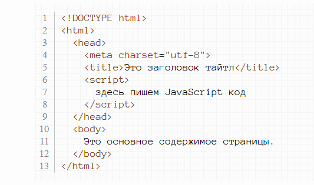
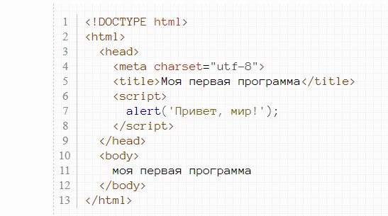
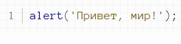

Язык JavaScript предназначен для выполнения в браузере наряду с HTML и CSS. Но, если эти языки предназначены для верстки структуры сайта, то JavaScript позволяет "оживлять" web-страницы - делать их реагирующими на действия пользователя или демонстрировать некоторую динамичность (к примеру, смена картинок в блоке или красивые плавно выпадающие менюшки).
JavaScript код пишется прямо на HTML странице внутри тега script. Этот тег можно размещать в любом месте страницы. Смотрите пример:
Давайте напишем нашу первую программу на JavaScript. Вот она:
Скопируйте этот код и разместите в HTML файле. Затем открой этот файл в браузере - и вы увидите диалоговое окошко с текстом.
Давайте разберем код написанной нами выше программы. Первым понятием, которое вам нужно узнать, являются функции. Функции позволяют выполнять некоторые действия. В нашем примере есть функция alert(), которая выводит текст на экран в виде диалогового окошка. Функция состоит из имени (в нашем случае это alert) и круглых скобок, написанных после этого имени. В этих круглых скобках следует писать параметры функции. В нашем случае параметром является текст, который выводится на экран. В нашем случае функция имеет один параметр, однако бывают функции, в которые нужно передавать несколько параметров. В этом случае эти параметры пишутся через запятую.
В дальнейшем я не буду расписывать то, как подключается JavaScript, а буду просто писать JavaScript код, подразумевая, что вы его будете записывать в тегах script. С учетом этого замечания наша программа станет выглядеть вот так:
